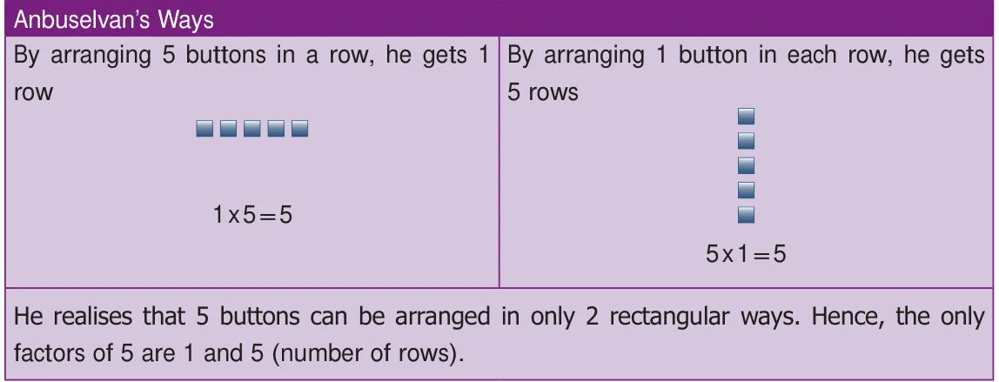
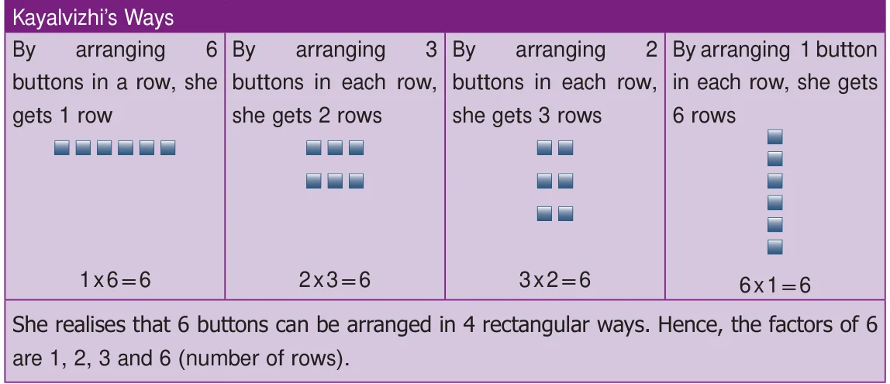
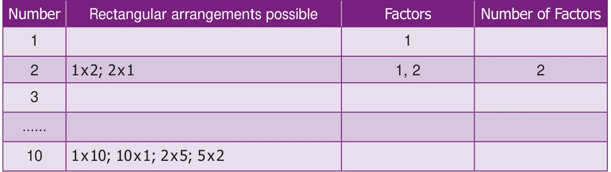
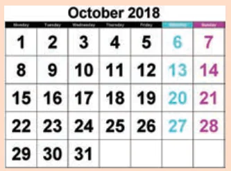
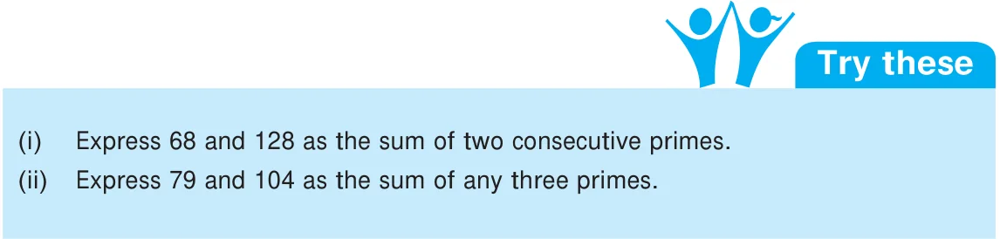
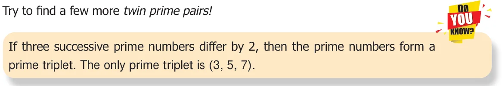

Think about the situation:
The teacher gave 5 buttons to Anbuselvan and 6 buttons to Kayalvizhi and asked them to arrange the buttons in all possible rows in such a way that the number of buttons in each row is equal. They did it, in different ways as shown below:


- Make different rectangular arrangements using 1 button, 2 buttons, 3 buttons, 4 buttons,…, 10 buttons and complete the following table:

From the table, we conclude that
- A natural number greater than 1, having only two factors namely 1 and the number itself, is called a prime number.
For example, 2 (\(1 \times 2\)) is a prime number as is 13 (\(1 \times 13\)).
- A natural number having more than 2 factors is called a composite number.
For example, 15 is a composite number (\(15 = 1 \times 3 \times 5\)) as is 70 (\(70 = 1 \times 2 \times 5 \times 7\)).
Note
The number '1' is neither prime nor composite
A number is a perfect number if the sum of its factors other than the given number gives the same number. For example, 6 is a perfect number, since adding the factors of 6 (other than 6), namely 1, 2 and 3 gives the given number 6. i.e., \(1+2+3 = 6\) is the given number. Check whether 28, 54 and 496 are perfect numbers or not.
Activity

- List out the prime and composite numbers represented by the dates in the month of October.
- Generate a few composite numbers by product of two or more natural numbers.
- Classify the numbers 34, 57, 71, 93, 101, 111 and 291 as prime or composite.
1.2.1 Finding the Prime Numbers by Sieve of Eratosthenes Method
Sieve of Eratosthenes, is a simple method of elimination by which we can easily find the prime numbers upto a given number. This method given by a Greek Mathematician, Eratosthenes of Alexandria, follows some simple steps which are listed below, by which we can find the prime numbers.
Step 1: Create 10 rows and 10 columns and write the numbers from 1 to 10 in the first row, 11 to 20 in the second row and continue the same as 91 to 100 in the tenth row.
Step 2: Leave 1 as it is neither prime nor composite (Why?). Start with the smallest prime 2. Encircle and colour 2 and cross out all other multiples of 2 (all even numbers) in the grid.
Step 3: Now, take the next prime 3. Encircle and colour 3 and cross out all other multiples of 3 in the grid.
Step 4: As 4 is crossed out already, go for the next prime 5 and cross out multiples of 5, except 5.
Step 5: Keep doing this, for two more primes 7 and 11 and stop. (Think why?) The above steps are carried out to find prime numbers upto 100 in the following grid.
SIEVE OF ERATOSTHENES
| 1 | 2 | 3 | 5 | 7 | |||||
| 11 | 13 | 17 | 19 | ||||||
| 23 | 29 | ||||||||
| 31 | 37 | ||||||||
| 41 | 43 | 47 | |||||||
| 53 | 59 | ||||||||
| 61 | 67 | ||||||||
| 71 | 73 | 79 | |||||||
| 83 | 89 | ||||||||
| 97 |
From the Sieve of Eratosthenes, we observe that,
- The crossed-out numbers are composite and the coloured numbers (encircled) are primes. The total number of primes upto 100 is 25.
- The only prime number that ends with 5 is 5.
1.2.2 Expressing a Number as the Sum of Prime Numbers
Any number greater than 3 can always be expressed as the sum of two or more prime numbers. Let us illustrate this in the following examples.
Example 1: Express 42 and 100 as the sum of two consecutive primes.
Solution: \(42 = 19+23\); \(100 = 47+53\)
Example 2: Express 31 and 55 as the sum of any three odd primes.
Solution: \(31 = 5+7+19\) Another way: \(31 = 3+11+17\)
\(55 = 3+23+29\) (find another way, if possible!)

1.2.3 Twin Primes
A pair of prime numbers whose difference is 2, is called twin primes. For example, (5, 7) is a twin prime pair as is (17,19).
